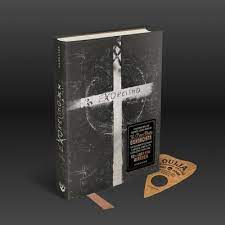
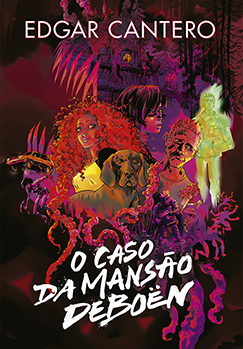

|
Título |
Autor |
Descrição |
*Clicando na capa do livro você será direcionado para o site de venda
|

|
Exorcismo
|
THOMAS B. ALLEN
|
“LIVRAI-NOS DE TODO O MAL, AMÉM.”
Um fenômeno quase paranormal atingiu o mundo em 1973. Multidões sofreram de náuseas, desmaios,
alucinações e calafrios, numa histeria coletiva sem precedentes. Todos aparentemente possuídos por um
filme: o já clássico O Exorcista, dirigido por William Friedkin e adaptado do romance que o roteirista
Willian Peter Blatty lançara dois anos antes e que completa 45 anos em 2016.
Se a ficção consegue ser tão assustadora, imagine o poder contido na história real? Muitos não sabem,
mas a obra-prima de W. Peter Blatty não se trata de uma invenção. Ela foi inspirada num fenômeno ainda
mais sombrio, desses que a ciência não consegue explicar: um exorcismo de verdade.
A história real aconteceu em 1949, e você pode conhecê-la — se tiver coragem! — no livro EXORCISMO, do
jornalista Thomas B. Allen, lançamento da DarkSide Books em 2016. Exorcismo narra em detalhes os fatos
que aconteceram com Robert Mannheim, um jovem norte-americano de 14 anos que gostava de brincar com sua
tábua ouija, presente que ganhou de uma tia que achava ser possível se comunicar com os mortos.
Thomas B. Allen contou com uma santa contribuição para a pesquisa do seu trabalho. Ele teve acesso ao
diário de um padre jesuíta que auxiliou o exorcista Bowdern. Como resultado, seu livro é considerado o
mais completo relato de um exorcismo pela Igreja Católica desde a Idade Média.
Os investigadores paranormais Ed e Lorraine Warren definiram a obra de Thomas B. Allen como “um
documento fascinante e imparcial sobre a luta diária entre o bem e o mal”. EXORCISMO é um livro
exclusivo da DarkSide Books, que vem em capa dura e o padrão de qualidade quase psicopata da editora.
|
|

|
O CASO DA MANSÃO DEBOËN
|
EDGAR CANTERO
|
Eles se conheceram na infância, nas férias em Blyton Hills - a cidade debruçada no lago mais enigmático
que uma criança poderia imaginar. Anos depois, Andy é uma mulher extremamente solitária e sente que não
se encaixa em lugar algum; Kerri busca consolo para seus medos e complexos na bebida; Nate se interna
voluntariamente em hospitais psiquiátricos e tem a constante companhia do fantasma de Peter, o amigo que
se tornara um astro de Hollywood mas morreu de overdose. Nenhum dos quatro podia imaginar que seu futuro
seria fadado ao fracasso por conta de uma aventura adolescente envolvendo a Mansão Deboën.
Mais de uma década antes, em 1977, eles eram apenas quatro jovens inquietos, acompanhados de um
simpático cachorro, quando foram até o lago da cidade de Blyton Hills para desvendar um mistério. Em vez
de monstros assustadores e espíritos vingativos, o Clube dos Detetives de Blyton, como eles se
intitulavam, descobriu que tudo não passava da tramoia de um criminoso fantasiado. Mas o que eles viram
e ouviram naquele dia jamais deixa de aterrorizá-los.
Com a vida estagnada e imersa em um caos insuportável, Andy se convence de que é preciso enfrentar o
passado que não os permite seguir em frente. O grupo então se reúne para tentar entender o que realmente
aconteceu naquele fatídico verão e, desta vez, terão certeza de que a resposta é muito mais macabra e
perigosa do que imaginavam.
Uma narrativa que celebra a nostalgia dos anos 1990, a amizade e os fantasmas (reais ou não) que
precisamos enfrentar para superar maldições e maus agouros, O caso da Mansão Deboën une doses do terror
consagrado por H.P. Lovecraft ao humor sagaz das clássicas histórias de detetives juvenis, popularizadas
por produções como Scooby-Doo.
|
|
|
Box Legend
|
MARIE LU
|
Considerada pelo público e pela crítica internacional uma das melhores sagas de distopia já publicadas,
a trilogia Legend, da chinesa radicada nos EUA Marie Lu, conquistou leitores de diversas partes do
mundo. Ambientada na República, nação instalada numa região outrora conhecida como costa oeste dos
Estados Unidos e que vive em guerra contra as Colônias, a série acompanha o romance improvável entre
dois jovens de origens distintas numa realidade opressora.
Nascida em uma família de elite em um dos mais ricos setores da República, June é uma garota prodígio de
15 anos que está sendo preparada para o sucesso nos mais altos círculos militares da República. Nascido
nas favelas, Day, de 15 anos, é o criminoso mais procurado do país; porém, suas motivações parecem não
ser tão mal-intencionadas assim. De mundos diferentes, os dois não têm motivos para se cruzarem, até que
o irmão de June é assassinado e Day se torna o principal suspeito.
Presos num grande jogo de gato e rato, Day luta pela sobrevivência da sua família, enquanto June procura
vingar a morte de Metias. Mas, em uma chocante reviravolta, os dois descobrem a verdade sobre o que
realmente os uniu e sobre até onde seu país irá para manter seus segredos, numa trama de forte conteúdo
político e repleta de ação, reviravoltas e romance.
|